Tender Rusuh Booking Ticket
BooketAntrean tiket konser
Arsitektur aplikasi web, dari layar pembeli sampai layanan yang mengatur antrean, stok tiket, dan pembayaran.
PT DJS (Deploy Jumat Sore)
Mulai presentasi →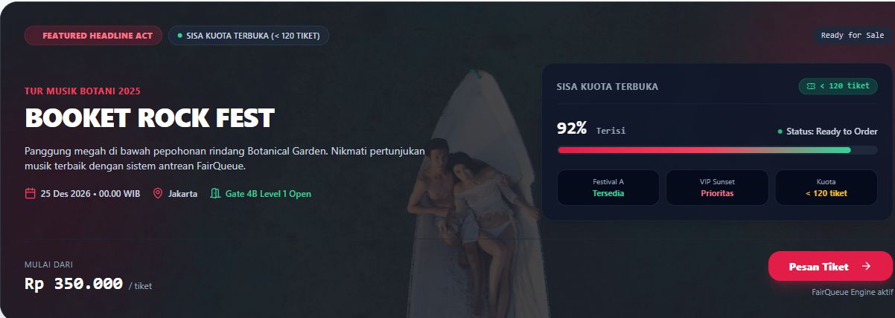
FairQueue saat tiket diburu
Pembeli dapat melihat posisinya sambil menunggu giliran memilih tiket.
- Saat penjualan dibuka
Lonjakan permintaan, pemborongan, dan tiket duplikat membuat pembeli sulit mendapat kepastian.
- Giliran pembeli
Rancangan mencatat urutan kedatangan di PostgreSQL. Valkey menyajikan posisi dan perkiraan waktu tunggu.
- Pembatasan checkout
Rancangan memeriksa slot tiap 200 ms, dengan target 20 pembeli masuk per detik dan paling banyak 100 checkout aktif.
Saat penjualan tiket dibuka
Banyak pembeli datang bersamaan. Ada empat hal yang perlu dijaga agar transaksi tetap berjalan.
- Koneksi databasePermintaan yang datang serentak bisa memenuhi koneksi database. Antrean membatasi berapa pembeli yang masuk ke checkout.
- Stok tiketDua pembeli bisa melihat satu tiket terakhir. Stok perlu diperiksa dan dikurangi dalam transaksi database yang sama.
- Worker saat sepiWorker yang hanya mendapat CPU saat ada request HTTP bisa tertunda, padahal masih ada antrean atau transaksi yang perlu diproses.
- Pembayaran mendekati tenggatTransfer bisa berhasil sebelum tenggat, sementara callback datang belakangan. Status harus diperiksa sebelum stok dilepas.
Peta sistem Booket
Web menampilkan alur pembeli dan memakai SDK untuk mengakses API. Layanan di belakang gateway memutuskan giliran, stok, dan status pesanan.
- Jalur webReact mengakses
api.booket.idlewat SDK Kotlin/JS. Keycloak menyediakan token untuk operasi yang memerlukan login. - Data dan integrasiRancangan menempatkan PostgreSQL sebagai sumber data transaksi. Midtrans memproses pembayaran, sementara outbox meneruskan event ke Kafka.
Alur pemesanan di Booket
Waiting room mengatur giliran. Setelah pembeli masuk, PostgreSQL menjaga stok dan kuota NIK.
- Masuk antreanTombol Pesan memanggil
OrderFacade.beginCheckout. Web membuka ruang tunggu atau checkout sesuai hasil dari server. - Isi dan kirim pesananPilihan tier dan data peserta diisi di browser. Saat dikirim, layanan order memeriksa kuota dan stok sebelum membuat sesi bayar.
- Bayar dan ambil tiketPembeli membayar di Midtrans, lalu kembali ke Booket. Web membaca status order dan menampilkan tiket yang tersedia.
Arsitektur frontend Booket
Booket memakai React 18, TypeScript, Vite, dan SDK Booket.
- Halaman React
React Router memilih halaman sesuai URL.
- Hook fitur
src/featuresmemuat data dan menangani aksi pengguna. - SDK Booket
@booketid/core0.11.1 menyediakan façade untuk tiap fitur. - Sumber data
Mock dari SDK saat demo, API Booket saat live.
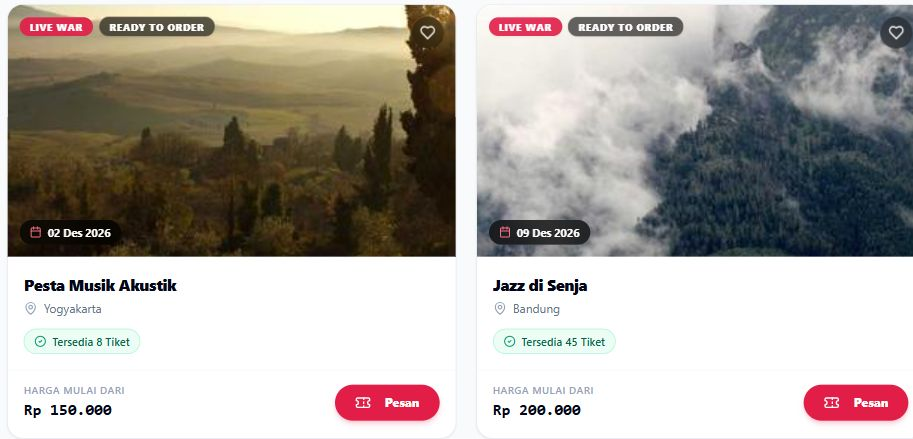
- Sinkronisasi state
useFacadeStoremenghubungkanFlowStoredari SDK dengan React lewatuseSyncExternalStore. - Validasi checkout
src/domain/rules.tsmengecek format dan duplikasi NIK serta batas tiga tiket per pesanan. - Sesi pengguna
AuthFacadememakai bridge Keycloak.CoreProvidermemasok token ke façade yang memerlukannya.
Peta halaman web
AppRouter memilih halaman dari URL. AppLayout menyediakan navigasi desktop dan seluler, sedangkan setiap fitur menangani logikanya sendiri.
/dan/katalog· KonseruseConcertsmembaca katalog lewatHomeFacade. Filter ditangani di web./waiting-room· AntreanWaitingRoomFacademembaca status memakai token sesi. UI menampilkan nomor dan perkiraan waktu./checkout· PemesananCheckoutFacadememuat tier, biaya, dan batas waktu.OrderFacademengirim pesanan./payment/status· PembayaranusePaymentResultmembaca status order dan memilih tampilan menunggu, sukses, gagal, atau kedaluwarsa./tiket· Tiket SayaTicketFacadememuat daftar booking dan rincian tiket per tier./profil· ProfilProfileFacadememuat akun.ParticipantFacademenangani data peserta untuk isi cepat saat checkout.
Dari state SDK ke layar
Aksi pengguna berjalan ke façade lewat hook fitur. Perubahan state SDK berjalan kembali ke React melalui store.
StateFlow sampai React Buka ukuran penuh- Mode demo
CoreProvidermengaktifkanuseMock. Façade mengambil data contoh dari SDK.- Mode live
- Façade memakai base URL API dan mengambil token untuk operasi yang perlu autentikasi.
CoreProvider berbagi satu OrderFacade lintas halaman. Pilihan tier dan isian peserta tetap berada di hook checkout.
Login dan pemulihan sesi
Setelah pindah halaman atau memuat ulang tab, web memulihkan konteks untuk membuka lagi antrean atau pesanan.
Data yang dipakai saat kembali
- Login dan profil
Token di
sessionStoragemembantu memulihkan login di tab.ProfileFacadememuat profil bila belum tersedia. - Antrean atau checkout
Server mengembalikan sesi aktif untuk kartu “Antrean Anda”. Token terakhir di tab membantu tautan antrean.
- Ringkasan pesanan
orderSnapshot.tsmenyimpan ringkasan untuk tampilan. Status dan total dibaca lagi dari API order.
Giliran masuk ke checkout
Server menentukan giliran. Browser menampilkan status dan berpindah halaman saat checkout tersedia.
- Pembaruan status
WaitingRoomFacademelakukan polling dengan token antrean. Hook menghentikan polling saat halaman ditinggalkan. - Perkiraan waktu
UI menampilkan
queueNumberdan memperbarui hitung mundur darietaSecondssetiap kali status disinkronkan. - Giliran tiba
Web mengikuti URL checkout dari server. Hitung mundur membantu pembeli memperkirakan giliran.
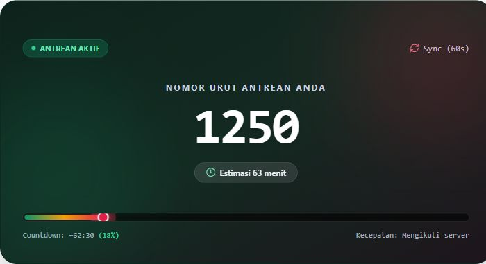
Diagram admission antrean
Frontend saat format API berbeda
Booket punya jalur cadangan untuk membaca format lama pada respons waiting room.
- Kapan dipakaiDi mode live, fallback dipakai saat SDK mengembalikan
INVALID_RESPONSEtanpa posisi antrean atau tautan checkout yang bisa digunakan. - Cara membaca ulang
useWaitingRoommenghentikan polling SDK.waitingRoomFallback.tsmembaca bentuk respons lama yang dikenal. - Saat jaringan tergangguUI bisa menjaga posisi terakhir sambil mencoba lagi. Polling berhenti saat server menyatakan sesi berakhir.
Respons HTTP 200 masih bisa membawa struktur data yang tidak sesuai kontrak SDK. Jika format lamanya dikenal, Booket tetap bisa menampilkan antrean.
Validasi web dan server
Browser membantu pengguna memperbaiki isian sebelum mengirim pesanan. Server mengonfirmasi hasil yang ditampilkan web.
Geser tabel untuk melihat semua kolom.
| Bagian | Frontend web | Backend |
|---|---|---|
| Tier dan jumlah | Membatasi pilihan hingga tiga tiket dan menampilkan kuota yang diterima. | Memeriksa stok dan kuota saat submit, lalu mencadangkan tiket jika syarat terpenuhi. |
| Data peserta | Meminta nama, NIK 16 digit, dan NIK yang berbeda untuk tiap tiket. | Memeriksa ulang peserta dan aturan pemakaian NIK untuk konser tersebut. |
| Masa berlaku | Menghitung mundur dari waktu server dan menampilkan pesan saat sesi habis. | Menentukan apakah token checkout masih berlaku saat pesanan dikirim. |
| Status bayar | Membaca status dan total lewat OrderFacade.getOrderStatus. Order yang belum final diperiksa ulang setiap tiga detik. | Memverifikasi pembayaran dengan Midtrans dan menyimpan status akhir order. |
Rincian pembayaran di checkout
Pembeli memeriksa rincian harga sebelum melanjutkan ke Midtrans Snap.
- Pilihan pembayaran
Materi produk menampilkan virtual account BCA, Mandiri, BRI dan BNI, serta QRIS, GoPay, dan kartu kredit.
- Rincian harga
Contoh di PDF memakai biaya layanan 10% dan pajak hiburan 11%. Untuk transaksi, tampilkan nominal yang dikembalikan API order.
- Jika pembayaran diulang
Rancangan memakai Idempotency-Key untuk pengiriman ulang. Setelah kembali dari Snap, web membaca status pesanan dari API.
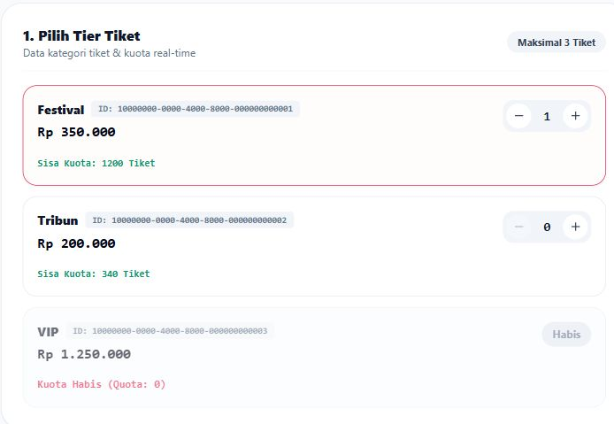
Pembayaran dan e-tiket
Setelah pembayaran terkonfirmasi, pembeli bisa membuka e-tiket dari menu Tiket Saya.
- Bayar di Midtrans Sandbox
Pembeli dapat mencoba virtual account, QRIS, atau kartu. Booket menampilkan status sesuai hasil pembayaran.
- E-tiket di aplikasi
Daftar menampilkan satu entri per booking. Detail merangkum tiket per tier setelah tiket diterbitkan.
- Email pembayaran
Brevo mengirim instruksi bayar dengan tautan Snap dan konfirmasi setelah pembayaran.
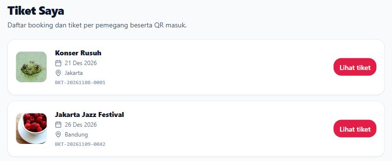
Infrastruktur Booket di Jakarta
Inventaris proyek booket-512519 berdasarkan audit 23 November 2026.
- Layanan Cloud Run
- 17
- VM aktif
- 2
- Database utama
- PostgreSQL 18
- Akses dan identitasCloudflare mengelola DNS dan distribusi konten untuk dua situs. Kong dan middleware Go menangani akses API dengan token Keycloak.
- Transaksi dan tiketLayanan antrean, order, produk dan tiket memakai Cloud SQL Enterprise Plus dengan SSD 100 GiB.
- IntegrasiBrevo menangani pengiriman dan pelacakan email transaksi. Confluent Cloud Standard di Jakarta masuk dalam usulan PoC.
Cloudflare dan Brevo
Cloudflare mengantarkan konten web ke pembeli. Brevo menangani email selama proses pemesanan.
Cloudflare · Domain dan CDN
- Kelola domain
Tim mengelola record DNS booket.id dan subdomain di Cloudflare. Record mengarahkan browser ke tujuan yang sesuai.
- Sajikan konten
Dua situs memakai Workers/Pages. CDN menyajikan aset statis seperti gambar, CSS, dan JavaScript dari cache saat tersedia.
Brevo · Pengiriman dan pengelolaan email
- Kirim pesan transaksi
service-notification membaca event Kafka, menyiapkan isi email, lalu memanggil API Brevo untuk mengirim tautan bayar atau konfirmasi.
- Pantau pengiriman
Brevo mengembalikan messageId saat menerima pesan. Tim menggunakan log transaksi untuk memeriksa status pengiriman ke alamat pembeli.
Peran layanan backend
Dalam rancangan, Kong menjadi pintu masuk API dan meneruskan identitas terverifikasi ke layanan yang sesuai.
service-user- Menangani profil, role, dan maksimal tiga peserta tersimpan per akun. Validasi NIK memakai adapter Dukcapil.
service-product- Melayani katalog dan membaca ringkasan tier dari service-ticket melalui gRPC.
service-ticket- Menerbitkan tiket, membaca tabel orders, dan mengambil data produk melalui gRPC.
service-waiting-room- Mencatat sesi, membuka slot checkout, dan memakai Valkey untuk urutan antrean yang dapat dibangun ulang.
service-order- Mencadangkan stok, membuat sesi Midtrans, dan memeriksa hasil pembayaran.
service-outbox- Mengirim event order ke Kafka agar layanan tiket dan notifikasi dapat memprosesnya.
PostgreSQL menyimpan data transaksi dan antrean. Valkey mempercepat pembacaan urutan antrean.
Diagram gateway dan verifikasi identitas
Diagram ports dan adapter layanan
Stok tiket dan kuota NIK
Satu pesanan bisa memuat hingga tiga tiket. Setiap tiket harus memakai NIK peserta yang berbeda.
- Validasi peserta
Frontend memeriksa NIK 16 digit dan menolak duplikasi antar peserta. Skenario demo memakai
dukcapil-mock. - Transaksi stok
Rancangan memakai hash NIK untuk memeriksa kuota. Jika kuota atau stok gagal diperbarui, transaksi dibatalkan.
- Pesanan lintas kategori
Kategori dikunci mengikuti urutan ID. Worker kedaluwarsa dapat melewati baris yang terkunci dengan
SKIP LOCKED.
Batas waktu checkout dan pembayaran
Timer di layar mengikuti waktu kedaluwarsa dari server. Pembayaran perlu diperiksa sebelum pesanan ditutup.
- Akses checkout
- 5 menit
- Sesi Midtrans
- 10 menit
- Checkout habis
Aplikasi menampilkan pemberitahuan sesi berakhir dan slot checkout dilepas.
- Callback terlambat atau berulang
Worker memeriksa status pembayaran sebelum menutup pesanan. Pemrosesan ulang harus aman.
Outbox dan event order
Event dikirim ke layanan tiket dan notifikasi setelah status order disimpan.
- Simpan hasil
Perubahan order dan baris outbox disimpan dalam satu transaksi.
- Terbitkan event
Worker menandai baris setelah Kafka mengonfirmasi. Jika pengiriman gagal, baris tetap menunggu.
- Proses event
Tiket memakai order-paid untuk menerbitkan tiket dan order-failed untuk melepas stok. Notifikasi juga memakai order-placed untuk mengirim tautan bayar.
Pengujian dan rilis frontend
GitLab CI menjalankan pemeriksaan kode, tes, dan build sebelum paket dikirim ke Cloud Run.
- Tes lulus pada snapshot
- 666
- File tes pada snapshot
- 91
- Ambang coverage per file yang diukur
- 80%
- npm audit & Gitleaks
- Vitest
- SonarQube
- TypeScript & Vite
- Artifact Registry
- Cloud Run
Jumlah tes mengacu pada snapshot di materi assessment. Pipeline mencatat coverage dalam LCOV dan hasil tes dalam JUnit.
Hasil build Vite disajikan oleh Nginx. Saat rute seperti /checkout dibuka langsung, Nginx mengembalikan index.html agar React Router memuat halaman.
Hasil uji yang dilaporkan
Materi produk mencatat 1.579.499 request dalam skenario uji 30 menit.
- Profil beban
PDF mencantumkan 1.000 TPS selama 30 menit. Rincian endpoint, campuran transaksi, dan throughput per interval perlu dicocokkan dengan laporan uji.
- Tingkat kegagalan
Sebanyak 0,0137% request dilaporkan gagal. Angka ini mencakup skenario yang diuji. Latensi p95 API inti masih menjadi target ukur PoC.
- Pengujian notifikasi
Dokumen backend mencatat 120 tes service-notification lulus. Angka 666 pada slide sebelumnya berasal dari suite frontend.
Demo pemesanan tiket
Empat hal yang akan kita lihat langsung di aplikasi Booket.
- Masuk antrean
Login, pilih konser, lalu tunggu sampai checkout terbuka.
- Coba NIK ganda
Pilih hingga tiga tiket, lalu isi dua slot dengan NIK yang sama. Aplikasi menampilkan validasi.
- Lanjutkan antrean
Dari Beranda, buka kartu “Antrean Anda” untuk kembali ke sesi yang masih aktif.
- Bayar dan buka tiket
Untuk demo pembayaran sandbox, lanjutkan dari checkout hingga e-tiket tersedia.
Biaya bulanan infrastruktur
PoC menguji Cloud SQL yang lebih kecil dan mengalokasikan CPU kontinu untuk tiga worker inti.
- Konfigurasi saat ini + usulan Kafka
- US$2.343,11 / bulan
- Target setelah transisi PoC
- US$1.936,46 / bulan
- Cloud SQLTarget 4 vCPU / 32 GiB, SSD tetap 100 GiB, dan backup terjadwal. Estimasi turun dari US$1.059,03 ke US$503,64 per bulan.
- Cloud RunSatu instance dengan CPU kontinu untuk masing-masing worker antrean, order, dan outbox. Estimasi Cloud Run US$239,02 per bulan.
- Kafka dan emailConfluent Standard 1 eCKU sekitar US$554,90 dan Brevo US$499 per bulan. Egress GCP dihitung terpisah.
Estimasi 730 jam, sebelum pajak dan cadangan. Sampel tujuh hari menunjukkan rata-rata CPU database 0,94% dan RAM 38,39%. Kapasitas saat puncak penjualan masih perlu diuji.
Anggaran PoC tiga bulan
Usulan pagu US$7.200 untuk 1 Desember 2026–28 Februari 2027.
Geser tabel untuk melihat semua kolom.
| Skenario | Sebelum cadangan | Kas + cadangan 20% | Pagu usulan |
|---|---|---|---|
| PoC dengan transisi | US$5.939,25 | US$7.140,74 | US$7.200 |
| Existing + Kafka | US$6.958,73 | US$8.364,11 | US$8.400 |
| Uji beban (100× sampel) | US$8.127,12 | US$9.766,19 | US$9.800 |
- Estimasi PoC per bulanDesember US$2.149,49, Januari US$1.962,92, Februari US$1.826,84. Transisi 1–14 Desember menambah kebutuhan kas US$223,89.
- Dasar perhitungan kasAlokasi domain 3/12 tahun diganti dengan satu perpanjangan penuh US$15,15, lalu ditambah cadangan 20%. Semua angka sebelum pajak.
Anggaran satu tahun
Usulan anggaran US$28.200 untuk 1 Desember 2026–30 November 2027 jika konfigurasi PoC lolos uji.
Geser tabel untuk melihat semua kolom.
| Skenario | Sebelum cadangan | Dengan cadangan 20% |
|---|---|---|
| Target PoC dengan transisi | US$23.424,06 | US$28.108,88 |
| Existing + Kafka | US$28.117,27 | US$33.740,73 |
| Uji beban sepanjang tahun | US$32.843,06 | US$39.411,67 |
- Selisih biayaTarget PoC menghemat sekitar US$5.631,85 (16,7%) dibanding existing + Kafka. Pagu cadangan dibulatkan ke US$33.800.
- Komponen terbesarPada target stabil, Confluent US$6.658,80, Cloud SQL US$6.043,73, dan Brevo US$5.988 per tahun sebelum cadangan.
Proyeksi mencakup tiga bulan PoC. Angka sebelum pajak. Skenario uji beban memakai 100× sampel dan Kafka 2 eCKU tiap bulan.
Rencana PoC 12 minggu
PoC menguji alur pemesanan dan worker di lingkungan yang sudah tersedia.
- Minggu 1–2Cocokkan tagihan GCP dan renewal domain. Cek penawaran Confluent Jakarta dan kuota Brevo. Catat metrik awal dan uji restore.
- Minggu 3–4Siapkan CPU kontinu untuk tiga worker. Integrasikan event order ke Kafka dan email uji via Brevo.
- Minggu 5–8Uji login, antrean, NIK, pembayaran sandbox, email, dan worker selama 30 menit tanpa traffic pengguna.
- Minggu 9–10Naikkan beban bertahap. Uji apakah SQL 32 GiB cukup dan ulangi simulasi pemulihan.
- Minggu 11–12Bandingkan biaya aktual dengan estimasi dan putuskan konfigurasi yang dibawa ke produksi.
Targetnya nol oversell, callback duplikat diproses idempoten, dan outbox tetap berjalan. Untuk API inti, target error <1% dan latensi p95 <2 detik.
Di luar pagu: pajak, pengerjaan dan migrasi, tenaga operasional, fee transaksi, overage Brevo, serta lingkungan kedua yang terisolasi.
Target uji berlaku pada profil beban yang disepakati. Ukur error dan p95 pada API inti. Catat waktu tunggu antrean dan latensi provider secara terpisah. Saat uji idle, periksa lag Kafka, retry, dan state akhir. Verifikasi email uji dan kontak CRM dengan log Brevo. Cocokkan penggunaan vendor setiap minggu. Keputusan produksi menunggu laporan uji, pemulihan, dan biaya aktual. Sumber: BOOKET_PROPOSAL_POC.md, 23 November 2026.PT DJS (Deploy Jumat Sore)
Keputusan PoC dan tanya jawab
Kami mengusulkan PoC 12 minggu untuk menguji antrean saat ramai, pemulihan transaksi, dan biaya operasional sebelum menentukan konfigurasi produksi.
Kembali ke panduan demo →Usulan utama sebelum pajak. Pagu US$8.400 jika Cloud SQL perlu tetap di 64 GiB.
Baca proposal PoC